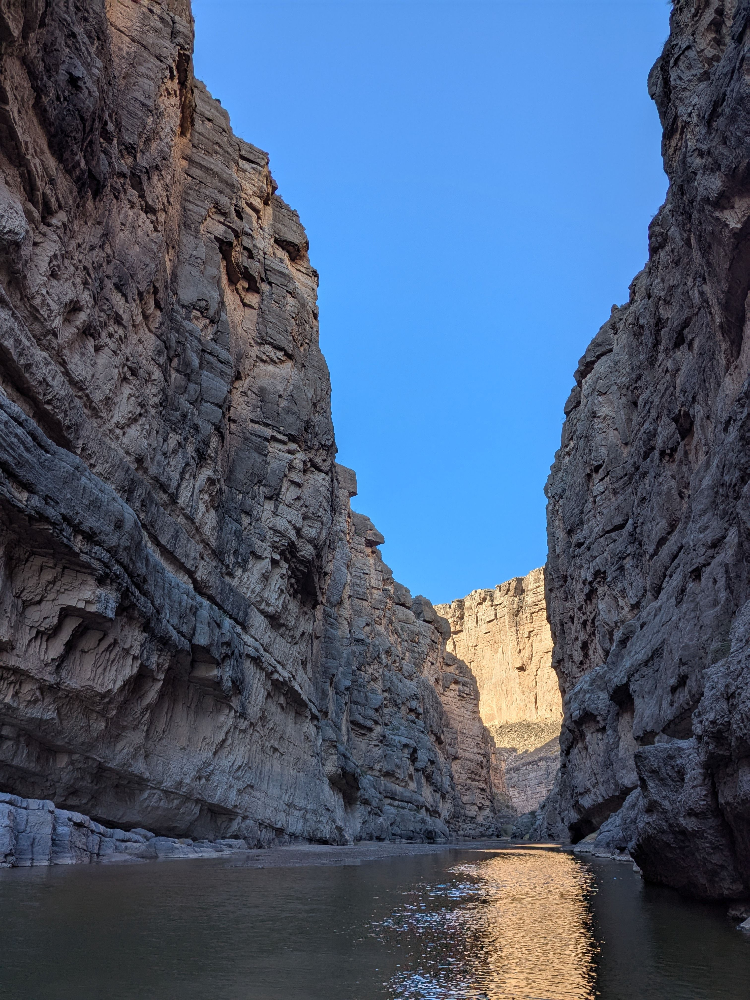
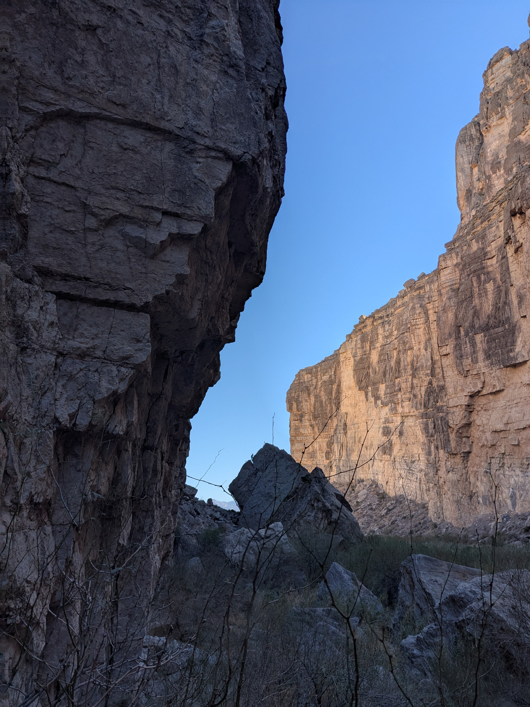
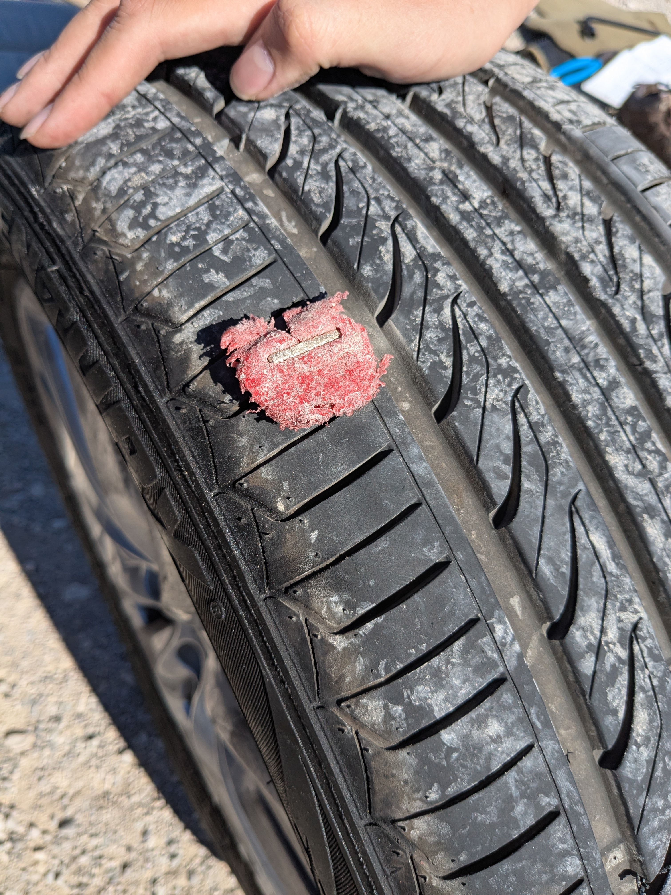
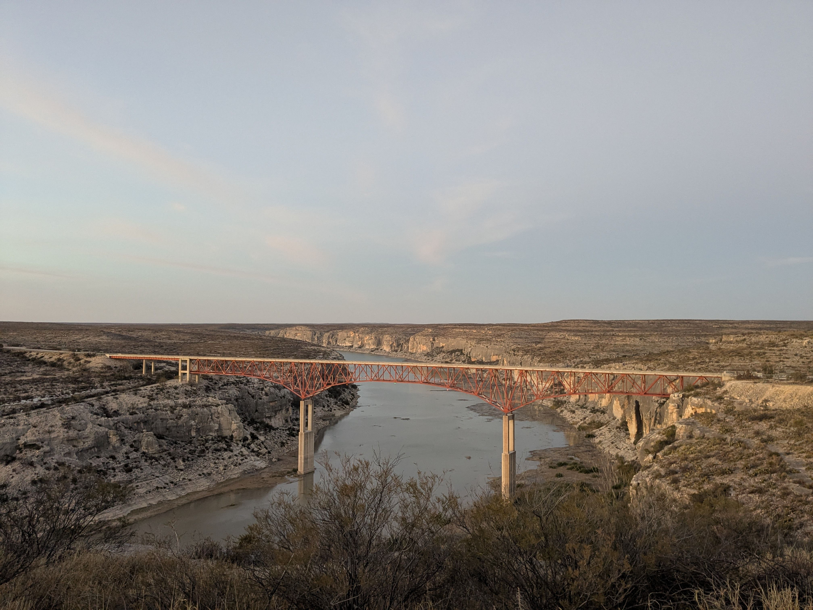
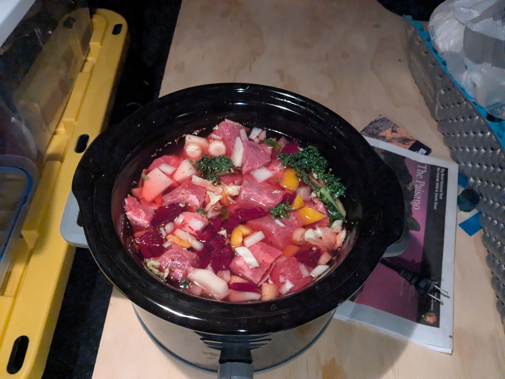
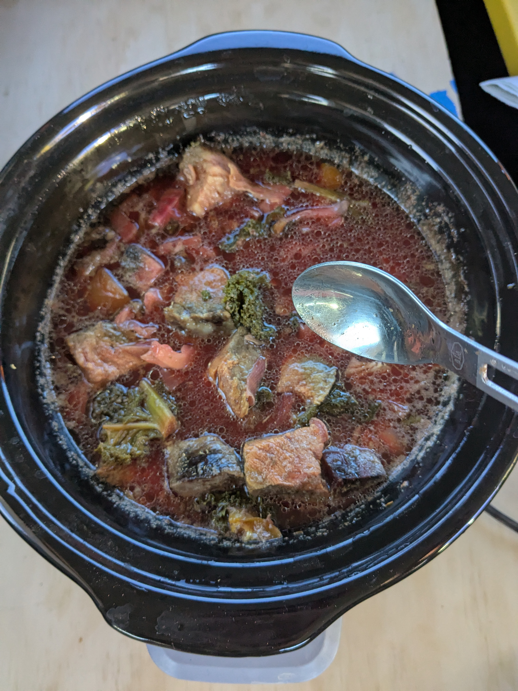
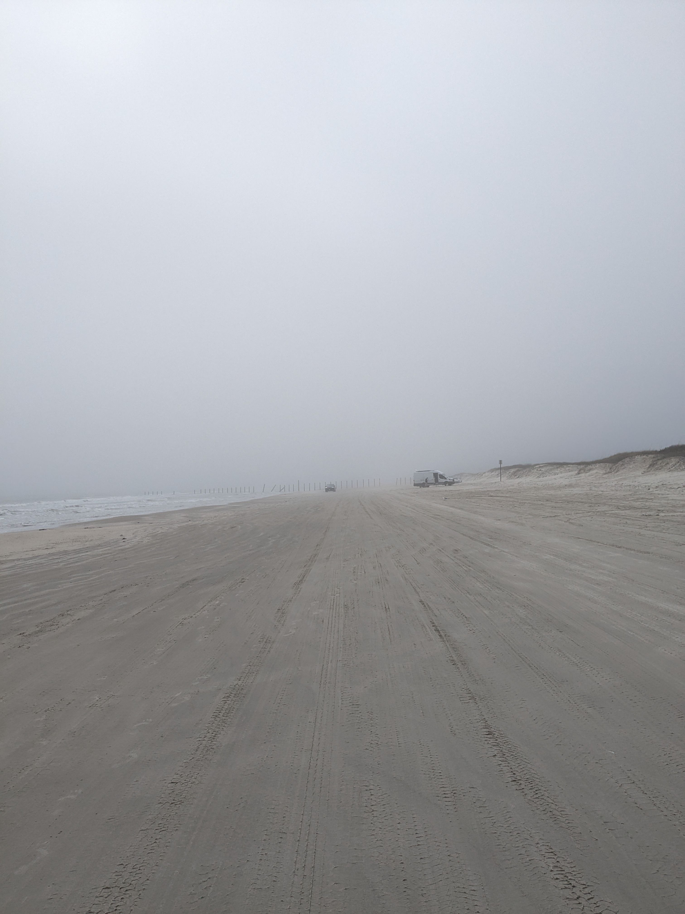
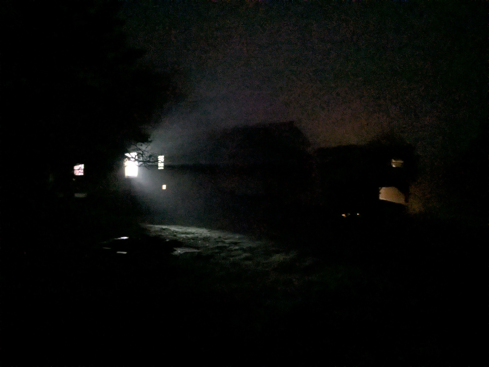
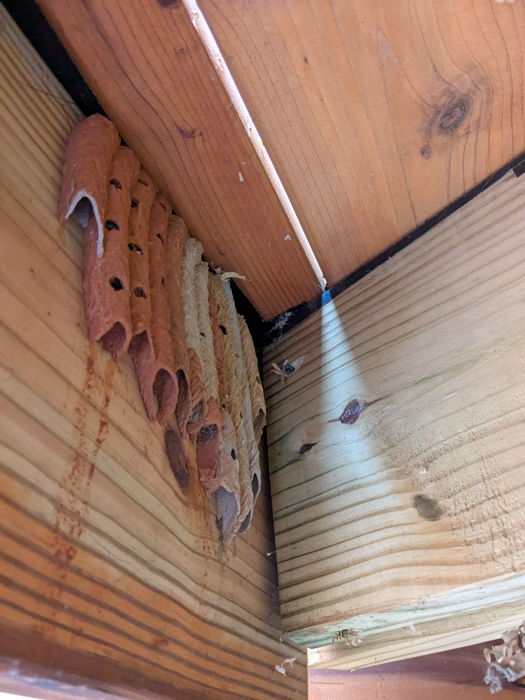
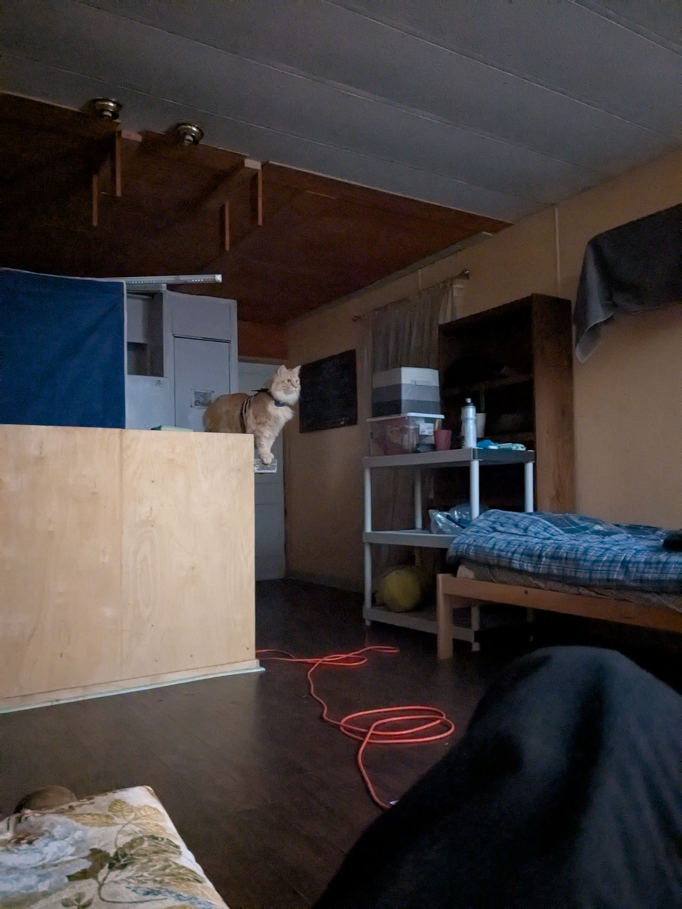

February
- 02/01/2025
- 02/02/2025
- 02/03/2025
- 02/04/2025
- 02/05/2025
- 02/06/2025
- 02/07/2025
- 02/08/2025
- 02/09/2025
- 02/10/2025
- 02/11/2025
- 02/12/2025
- 02/13/2025
- 02/14/2025
- 02/15/2025
- 02/16/2025
- 02/17/2025
- 02/18/2025
- 02/19/2025
- 02/20/2025
- 02/21/2025
- 02/22/2025
- 02/23/2025
- 02/24/2025
- 02/25/2025
- 02/26/2025
- 02/27/2025
- 02/28/2025
- 02/01/2025[UKR]
- 02/02/2025[UKR]
- 02/03/2025[UKR]
- 02/04/2025[UKR]
- 02/05/2025[UKR]
- 02/06/2025[UKR]
- 02/07/2025[UKR]
- 02/08/2025[UKR]
- 02/09/2025[UKR]
- 02/10/2025[UKR]
- 02/11/2025[UKR]
- 02/12/2025[UKR]
- 02/13/2025[UKR]
- 02/14/2025[UKR]
- 02/15/2025[UKR]
- 02/16/2025[UKR]
- 02/17/2025[UKR]
- 02/18/2025[UKR]
- 02/19/2025[UKR]
- 02/20/2025[UKR]
- 02/21/2025[UKR]
- 02/22/2025[UKR]
- 02/23/2025[UKR]
- 02/24/2025[UKR]
- 02/25/2025[UKR]
- 02/26/2025[UKR]
- 02/27/2025[UKR]
- 02/28/2025[UKR]
[EN]
02/01/2025#
Miles driven: 2253
I think Big Bend NP is one of those parks you don't fall for immediately. Like Death Valley or Joshua Tree. After exploring it a bit more, I started to see its appeal. Multiple ecosystems are encompassed in this huge park. Some parts give Death Valley vibes, others – Grand Canyon and Zion. Not sure I want to go there again, though.
Mexico on the left, the US on the right:

A V-easy boulder problem:

And some climber sending it:

Helped an exchange student from Vietnam with a flat tire. A future computer scientist:

A rest stop/stop for the night with a spectacular view on a bridge:

I brought a slow cooker with me on this trip. It only draws 180W at peak consumption – battery-friendly. Started the borscht before going to bed yesterday, and had it for breakfast and dinner today. And still have some left for tomorrow's breakfast:


02/02/2025#
Miles driven: 2613
Leaving borscht in your car for 24 hours and then eating it will give you diarrhea 🤷♂ (no pictures).
My impressions about Texas so far:
- very little public lands (for historical reasons)
- it's hot in February
- you want to get places – you drive a lot
- gas prices 😍
- trucks, trucks everywhere
- people seem to be friendlier from the get-go
On this trip I've been seeing a lot of Jeeps with rubber ducks lined up behind a windshield. At first, I though that it's the same jeep following me on my journey (which would've been cool), but then I spotted several duck-infested jeeps at the same time. The tradition is called "Jeep ducking" where the Jeep owners leave the rubber beasts on other Jeeps as a gesture of kindness.
When I was getting gas today, saw an option to get "ethanol-free" unleaded fuel. Made me wonder what's that. Apparently this non-ethanol fuel is more suitable for smaller engines, like ones in boats and lawnmowers – where it can sit for extended periods of time and you don't want ethanol to attract moisture and cause issues. Since the gas station was in a coastal city of Corpus Christi – everything checks out.
02/03/2025#
Miles driven: 2853
A drive-through beach in Texas (Gulf of Mexi... America is on the left):

I had breakfast in a diner, they had Fox News on a big screen TV – I wish I continued my news abstinence.
Austin is definitely not a typical American city. I've only been to suburbs, but I felt like I was somewhere in the outskirts of Kyiv.
On a drive to Austin, I was listening to different podcasts focusing on current political events. Trump did promise to dismantle the deep state, and it seems like he and his team had a clear plan on how to achieve that. The takeover of the Treasury by Musk is only one of the steps. Reaction from Democrats has been spineless so far. Congress as a legislative branch also isn't concerned with the government messing with their field of influence. Everything seems like an erosion of democratic institutions in this country. One may argue that it's been happening for a while now, but not as quick and forceful as in the last several weeks. What a time to be alive.
A cute courthouse in the "capital" of BBQ in Texas (I have yet to try the Texan BBQ):

02/04/2025#
Miles driven: 2853
Austin in February is hot. A lot of residential construction is going on. The number of barbershops is surprising.
I found a campground in South Austin – a small farmette within the city limits. It has showers, restrooms, chickens, goats, the Internet, and some interesting characters living on the property.


The Cathedral of Trash somewhere in the neighborhood:

I welcome a break from driving, for I definitely got tired of being on the road all the time. It's been almost two weeks since I left, and a discomfort from not having a "home base" has started creeping in. I guess it was expected.
Another, quite obvious observation – living out of a car/campgrounds is pretty comfortable, especially when the setup is right. But everything takes more time – cooking, cleaning, moving between places, etc. And I don't have time for things I expected I would have more time for. I need to try staying in the same place for several days.
Walmart has been my friend on this trip. I like the prices and the selection. Also, I can buy a lug wrench and peanut butter at the same store – convenient. What's not convenient is Walmart's policy on plastic bags, or rather the way cashiers distribute the items into the bags combined with how those bags are being placed for a buyer to pick them up. I bought five items there, including a steak for dinner. The bag with the steak never left Walmart 😩
My hippie campground has outdoor showers. For some reason, I really enjoy them. Or maybe I enjoy the mere fact of having a shower on demand?
02/05/2025#
Miles driven: 2862
Some of the streets in Austin could use more pedestrian crossings. My sampling data is very small, but the need to walk a quarter of a mile to cross a street in a residential neighborhood is annoying.
A contestant for the role of the best restroom:

I've been working on a hook for mkdocs that automatically adds Ukrainian translations for every journal entry. It's pretty impressive how advanced those models are. I can ask it for a "ready to go" solution to a problem and then iterate on the suggestions with the model. Like having a dialogue. It helps a lot that I'm very familiar with the domain – the familiarity was earned with a lot of blood and sweat – the timesaving is real. I used the LLM while building my power station – a lot of basic questions about electricity and grid. While I – a very proud graduate with an engineering degree, by the way – might still be lacking fundamental knowledge, I was able to grasp all concepts needed to assemble the power station that covers my needs. Which is very cool. But at the same time, having superficial knowledge leads to false confidence and oopsie daisy.
The campground I'm staying at for the third and last night is called "Camp EZ". I called it a hippie campground, but, honestly, it's a pretty unique place. The founder, Jim, converted this farmland into a small community. There are up to ten-ish people who live permanently on the land. Everyone has their unique small house (usually built out of a repurposed trailer). A chicken coop. Several goats and donkeys. Donkeys are territorial and they keep coyotes away. I spotted at least three cats. One Greek and one Bulgarian. Small herds of deer would loiter around with zero cares given about people. I have mentioned outdoor showers. And one of the restrooms is plain gorgeous. I really enjoy having the "nature" one step away from where you live. Even if it's a car 🙂
Perhaps, the only outcome of this trip will be my rating of the best restrooms I saw on this trip.
02/06/2025#
Miles driven: 2914
Apparently, the majority of the bee population in the world carries a parasite, Varroa Destructor. Except for bees in Australia, because everything is upside down there anyway.
I found this opportunity to work part-time in exchange for board in Texas near Austin. Today is the first day of helping Jack and his family with the construction of their house(s). I was staining wooden cabinets today. Also won a chess game against Adam, Jack's 6-year-old son; felt very accomplished.
02/07/2025#
Miles driven: 2914
Did more staining today. It's interesting that stain in Ukrainian is "пляма", a word with generally a negative connotation. But in English, "staining" means a process of applying oil/paint wood finish to change its color and enhance its protection against elements – something positive. But "to stain a shirt" would be something negative. My vocabulary for construction-related topics is non-existent.
The work shift is 8am - 1pm. Jack and Loraine, the hosts, are super chill people to work with. In the last 4 years they've had ~80 volunteers helping them with the construction projects on their property. You can definitely see a lot of progress, but doing almost everything by yourself sure takes a lot of time. Speaking of constructing things, I built a hand-washing station:

I'll be able to build a house in no time.
Filed my tax return today and cleaned the car. Also, almost fell for a scam via a text message.
02/08/2025#
Miles driven: 2960
The day was mainly dedicated to watering young trees (the weather has been abnormally warm and some of the trees are on the verge of dying); stopping algae that had settled on the shed's wall in its tracks; transplanting young American persimmon trees (one of the trees turned out to be a stump of an old tree); organizing some tools and materials.
Far fewer clouds today, but still a wonderful day. A shower and rooms with A/C make all the difference. Headly is a good boy:

Had a late night guest in my trailer house. The little dude was released into the wild later in the morning. The mouse trap was restocked with another cracker and placed back in my room.

Austin is home to the world's largest urban bat colony; the colony lives under a single bridge close to downtown. At some point, 30 years ago, they wanted to get rid of those bats in Austin, but then a grassroots conservation movement was launched with a goal of "redeeming" the image of bats amongst the public – they aren't bloodsucking monsters, but useful animals that eat mosquitoes (of which there are plenty in Austin), also they're cute (questionable). Didn't encounter the bats flying out from under the bridge myself, but, apparently, it's a spectacle to be seen.
Had the first "real" Texan BBQ in Austin at a very popular food truck. Wasn't impressed – too freaking salty. Technically it was Texan BBQ with Egyptian flavor... Aiham promised to take me to one of the original BBQ places tomorrow.
02/09/2025#
Miles driven: 3004
The weather has cooled down today, so I figured I could go for a a run. East Austin is bustling with new housing development. Entire neighborhoods are being erected at the same time. That's how you solve the housing crisis, California. I was surprised to see a "centralized" mailbox next to one of the freshly built neighborhoods:

Probably that's a common approach with new neighborhoods, but how would I know living in LA. Haha.
Had BBQ in a different place, a traditional yet popular place. To say I was impressed to the depths of my soul – no, it was okay and expensive. BBQ is a religion here and I'm not subscribed to it. Daria in Santa Monica makes better kebabs and grilled meat. "Copper BBQ" in Big Pine makes better BBQ. I hope BBQ police will let me out of Texas.
What does it mean "sensing with the AI"?

Finished implementing the hook for automatic journal entries translation – fast and free Wi-Fi at Aiham's place, yay! The Claude Sonnet is leaps and bounds better at producing polished Ukrainian translation than GPT-4o (using same system prompt, of course).
02/10/2025#
Miles driven: 3004
The forecast called for a thunderstorm this past night but nothing happened. The day's been cloudy and chilly though, making you want to move more. It should rain later today.
We were moving some freshly cut branches from the roadside when I spotted a bird's nest; must've been already empty when the branch was cut:

Spent part of a day sanding cedar planks that would make sidings on the "octagon" building (the "rectangle" building on the right already has siding in place):

It was surprisingly satisfying to chisel out rotten wood from around knots or in the cracks. Gotta be careful not to chisel out something from my hand.
Today I learned that FORD stands for FixOrRepairDaily or FoundOnTheRoadDead. The family uses an old Ford van as a workhorse – Hamo (Jack's dad) has issues with its reliability.
I was praising Austin's housing development, and today Jack told me that many of those new neighborhoods are being built in place of older houses. Native Austinites don't consider this new housing affordable; the city has been experiencing a big influx of wealthier people from other states (tech industry mainly) – new housing is for them. I guess, it's the unavoidable circle of life.
02/11/2025#
Miles driven: 3004
A rainy day today; spent the entire shift sanding the sidings. Can feel my shoulders – lots of chiseling isn't something you do every day.
Learned about glulam today, "glued laminated timber". A structural engineering wood product made of dimensional lumber bonded together by certain types of adhesive. In glulam, only the outer layers are often made of stronger, higher-quality wood because they experience the most stress, especially when bending. The inner layers can be made of softer, lower-quality wood since they primarily contribute to volume and stability only. Allows better cost/strength balance.
02/12/2025#
Miles driven: 3004
The rain continued well into the night and then for a few hours in the morning. Weather forecasts for the LA area are quite reliable – it's either perfect weather, rain, or wildfire. The timing of rain, for example, is also accurate. But here the weather forecast was all over the place – it said that rain would start on Monday night; it would be saying it was raining while it obviously was not. Lorraine said the nearest, and only, weather station is 6 miles away; plus the property sits on a hill – the actual weather near the weather station can be much different from what's here.
The family has the same World's Atlas as we had. In English, of course. What a coincidence:

Continued sanding sidings today; getting into the groove. Headly, for lack of a helpful hand to scratch him, has resorted to grass and sawdust as a scratcher:

Chiseling out pith and rotten wood is strangely rewarding, as I said earlier. Today I caught myself thinking that a dentist drilling out a cavity probably feels the same way. The stakes are higher though.
Learned today that cedar wood with its aromatic oils has strong bug and pest repellent properties. The tree also contains extracts that are toxic to fungi and other rot-causing elements. The sidings I'm working on are from cedar, I rarely see signs of a source tree being bug-infested at a significant scale.
The mouse trap caught another invader this past night. I put it out on the porch at night, because the mouse was making noises. Found it dead in the morning. Too cold I guess 🤷♂

02/13/2025#
Miles driven: 3004
What's the point in reading news often if you don't have control over things that are happening? Sometimes, rarely, the news is positive – it might uplift the spirit, motivate, make the world look more hopeful. But oftentimes, the news would evoke negative emotions, anxiety, agitation. Why would anyone want to voluntarily inflict harm on oneself? Being aware of things happening in the world or things that matter to you is important, but how often does one need to get updates from the news? 🤔
I've been using orbital sanders a lot recently. The tool is relatively simple to operate – velcro a sandpaper disk onto a backing disk, push a trigger, press the tool against a surface, and sand away. Yet, I've been burning through the sandpaper disks more often than I should – the sanding surface of a disk is still like new, but the velcro surface is completely worn down. Velcro connections use hook-and-loop fasteners. One surface (the backing disk on the orbital) has a ton of tiny plastic hooks, another surface (the back of a sandpaper disk) – a ton of soft, curly, hair-like loops. The velcro connection would disengage if one of the surfaces loses its properties. With orbital sanders, the reason for that is excessive heat that melts either hooks or loops. Excessive heat will be generated if you are 1) pressing the orbiter to the surface too strongly 2) using only the edge of a disk to sand tricky parts/be more precise 3) keeping the sander in the same place for too long. I was doing 1 and 2, especially 2.
How can one make two objects separated by some terrain completely level? One can use a laser, but it can be expensive and has its limitations, especially outdoors. A simple yet reliable method is to use water. Use water in a transparent tube – no matter the terrain or obstacles, the water level on both ends will always be the same. Unless the distance is hundreds of miles, then the curvature of the Earth will mess things up a bit (the Flat Earth society would argue, though).
The temperature swings in this area are unusual:

There are no mountains or other natural obstacles around – what the wind brings, that will be the weather today. And gosh it's been windy today. At night, when it was shaking the trailer house, I thought of Dorothy from Wizard of Oz and a road of yellow brick.
02/14/2025#
Miles driven: 3004
2/3 of sidings are done. The wind has subsided.
Leafcutter ants are fungus-growing ants prevalent in South America. They use fungi to feed their larvae. And in exchange, the ants feed fungi and protect them from pests and mold. Ant-fungus mutualism. Those ants actually domesticated the fungi (took them only 30 million years to complete) – it now produces special nutritious mycelium that grows in bundles to specifically feed the ants. Anyway, those ants form some of the largest and most complex animal societies, next to humans – meaning there are a lot of them. And when a lot of ants are cutting the leaves on trees or plants (thus the name) as fungi feed, large-scale deforestation occurs.. It's a real challenge to grow trees in Brazil in the areas where leafcutter ant colonies have a presence. Just a random fact told to me by a new volunteer from Brazil, Pedro. And another fact I learned from traveling down the ant rabbit hole – when the ants are on the move, they'll be attacked by certain flies that lay eggs in the crevices of the worker ants' heads. Often, a minim (a smaller worker) will sit on a worker and ward off any attack. I chuckled trying to imagine that.
The UFO (our trailer house, that is) landing:

02/15/2025#
Miles driven: 3004
Learned to play a dice game called "10000". Quite addictive. I won my first game 🎲
Installed a bunch of metal braces to reinforce the corners on a wooden deck. Had to remove this abandoned black wasp's nest too.

02/16/2025#
Miles driven: 3004
We planted 750 Loblolly Pine seedlings today – reforestation in action. The survival rate won't be too high, though. But considering cost/effort ratio (7 cents per sapling/~3.5 hours of life of 6 adults and two kids), it was time well spent.
I read about the Leafcutter ants only a couple of days ago, and today we found the result of their "work". A tree completely stripped of leaves; its leaves (or a part of them) gathered in a neat heap next to the entrance hole. Texas is ehome to one of the species of leaf-cutting ants, Atta texana. They love pine trees – their fungi love pine trees – especially loblolly pines. Good luck, little seedlings.

Hesperia (Pi), the horse, lies here. It must've been good at going in circles:

It's been nice, sunny, and windy today.
02/17/2025#
Miles driven: 3004
I made borscht for dinner today. The news had spread, and literally everyone in the household came to have some of it. 11 people including 2 children – my biggest audience so far – ate about 5 or 6 liters of borscht (the entire pot was gone) and survived. The projection of Ukrainian soft power.
My mom's borscht recipe:
1. soak some beans overnight (Peruvian beans, for example).
2. put beans and meat (1.5 - 2 lb beef; ideally on a bone) in a pot; fill it ~0.7 full with water; bring it to a boil.
3. remove the froth that comes from the beans when they get agitated in water. Today I learned: you can actually leave the froth as it is. Even though the foam might look concerning, it's safe to eat. The foam consists of proteins, starches, and a natural compound called saponins. Saponins creates foam when beans get agitated in water.
4. Let it simmer for 1.5 hours.
5. Cut and add 3 large potatoes.
6. Sauté one medium onion and a large grated carrot; Sautéing is optional – I had time and made things a bit fancier.
7. Let potatoes simmer for 15-20 minutes, and then add onions and carrots to the mix.
8. Grate 3 medium beets, and add them to the party. The borscht now looks like borscht - bloody red.
9. Let it simmer for 5 minutes, and meanwhile add salt to your taste (I added 2.5-3 tbsp of white death)
10. Remove the pot from a burner, and the icing on the cake – a bunch of fresh chopped dill
11. Serve it with good bread, sour cream, and garlic. I wish I had salo with me.
02/18/2025#
Miles driven: 3004
It's been cloudy and rainy today. The bees from local beehives decided to establish a new home at the highest point of the hexagon building 🐝

While making lunch today, I saw cabbage in the fridge ... it should've been added to the borscht yesterday, somewhere in step 7 of the recipe. No one complained. Also, there are zero casualties from my borscht.
02/19/2025#
Miles driven: 3004
Very. Windy. Day. Did some sanding in the shed (too cold and windy to be outside).
The family had a movie afternoon today. I stuck around and watched the "Flow" animation movie with them. Good stuff.
The weather here is bizarre:

My mom mentioned today the eventfulness of the last 30 days, and how it felt like a lot of time, more than a month, had passed. It's been almost a month since I left LA, but it feels like much longer. The novelty of experiences, I guess. But I kind of like it; I like feeling the passage of time at a "slow" pace. When I was working full-time and had the same routines day in and day out, an entire month could flash in front of me in the blink of an eye. It bothered me. I don't think though that one has to travel and meet new people all the time to make the flow of time slower. The key is purpose, I think. If something is done with purpose, the time spent on it will be perceived as "worthy and well-spent". If days, months, years are comprised of periods of time "well-spent", they will not blur into something we would regret as wasted time. Of course, going through turmoil and hardships can also be a time drag, but one can find a purpose there too.
A new volunteer. We don't need a mouse trap anymore:

02/20/2025#
Miles driven: 3004
Spent the entire day today building a "great garden wall of Anton":

Some of the blocks, especially on the left, aren't level – but the majority of them are nice and flush. I definitely enjoyed digging trenches and installing the blocks.
Grasshoppers are one of the most difficult insect pests to deal with. And here, in the Austin area, they are huge (and hungry). Apparently, even a small barrier can be an insurmountable obstacle for a grasshopper. They generally move on the ground, or jump from the surfaces that are relatively at the same level. They only jump in the air when threatened – it helps them to avoid predators. So, when there is even a small barrier – like my awesome wall – it creates a visual disruption in the path, and grasshoppers will often follow along the barrier rather than jumping over it. At least that's the hope.
Black widows here are much larger than ones I've seen in SoCal:

And a skunk up close:

02/21/2025#
Miles driven: 3061
Yesterday was my last day staying with Jack and his family, and I have new cherished memories. I had no expectations taking up this HelpX opportunity, but I'm so glad I did it. I plan to be back one day.
Roadtrip outcome #1: I like meeting new people and getting to know them through work (manual labor).
Roadtrip outcome #2: I don't need many amenities and comforts. Not that I had many of them in LA, but I can easily downscale. No amount of comfort can replace the absence of goals.
Roadtrip outcome #3: I prefer rural setting over city vibes. I have kinda known it already, but now I'm confident.
Aiham's bulgur recipe:
1. Boil some water and soak a cup of bulgur in it for 10 minutes
2. Drain the bulgur
3. Take a pot and sprinkle some oil in it; set it on high heat and let the oil warm up
4. Add bulgur to the pot and sauté it for a minute (stir it, stir it)
5. Add salt to your taste
6. Add 0.9 cup of boiling water; bring everything to a boil
7. Reduce to simmer and wait 25 minutes
8. Enjoy creamy and soft bulgur
02/22/2025#
Miles driven: 3170
Spent most of the day exploring Austin downtown area. The weather has been cold and gloomy.
Texas was an independent country for several years, and Texans are very proud of it. The Capitol building, the tallest state capitol in the US, symbolizes Texas's independence and grandeur.


What really surprised me was that the Capitol complex is open to public every day – one can meander through endless corridors, tunnels, staircases without supervision (aside from patrolling state troopers and omnipresent video surveillance). All while the governor, senators, representatives, and their staff are working in the same building. That's true accountability for you. It goes without saying that you can't wander into private offices, but it's easy to peek through the glass doors:

This place is screaming "WE ARE RICH" with every small detail. Like hinges on the doors to the Texas Supreme Court:
 Or when all chairs in public spaces are made of perforated wood with Texas State Seal (or some variation of it):
Or when all chairs in public spaces are made of perforated wood with Texas State Seal (or some variation of it):

I now want to see the Californian Capitol building. And compare.
When I arrived at the Capitol, there were two ongoing demonstrations/protests. One to support Ukraine, and another against budget cuts in public education.
Austin is the home for the University of Texas (UT). A huge educational establishment, on par with UCLA. The UT campus spans multiple blocks but seems to be less flashy/polished than UCLA or USC campuses. Several dormitories I walked by had very old and partially rotten window frames. A gymnasium:

Many faculty building have unusual contraptions mounted on their walls and roofs:


Likely AC/heating systems that were added sometime after the original building was built.
Texas is a southern state, and climate on its territory remained relatively mild during the most recent Ice Age; no ice also. A suitable environment for dinosaurs – Texas has been an excavation site for many dinosaur fossils. Because Texans love everything big, they are very proud of having dinosaurs living in "their" state:

Mammoth's molars the size of my foot:

Hitting the road again tomorrow.
02/23/2025#
Miles driven: 3525
Texas is vast and driving through it, outside of population centers, is very boring and almost tiring. Especially when I have to drive by the oil fields.
Got a free coffee at a gas station in the town of Llano. Was very pleased. Even though the driving is boring, people are generally very nice and friendly. The county's courthouse:

While driving, I was surprised by the number of counties I entered and left in relatively short time – there are road signs when entering a county. As it turns out, Texas has a whopping 254 counties. In contrast, California - even though 40% smaller – has only 58 counties. Texas has so many counties for historical reasons – its founders wanted to keep residents close to their local governments (courts, jails, schools, postal office). Counties needed to be small enough so residents could make it to the government and back in one day on horseback. A lot of small counties in a huge state = 254 counties.
I definitely dislike highway on- and off-ramps in Texas. The speed limit here is 75 mph. Almost everyone drives even faster. Highways in cities often have on-ramps immediately followed by off-ramps – meaning you have to be extra fast to change the lanes to not enter the off-ramp. But that you can get used to. What bothers me more is that many on-ramps are plain dangerous – the merging lanes are VERY short and the view of the traffic (that goes at least 70 mph) is often partially obstructed by a retaining wall or other structural element. Meaning that neither I nor drivers already on a highway can clearly see each other and adjust their speeds. Yes, I don't like it.
02/24/2025#
Miles driven: 3911
Finally got out of Texas. Again, I had to go through oil fields on my way out to New Mexico – such a dystopian landscape. The smell, the heavy machinery everywhere, small and depressed towns. At the same time, Texas is a leading state in renewable energy generation. Yesterday I drove through several counties (I read somewhere that one of the senators or governor candidates visited all 254 counties while campaigning... must've taken them quite a while) with wind turbines, and what's interesting, every now and then there were posts with "say NO to wind turbines" 🤷♂️. I would choose wind turbines over oil rigs any day. Speaking of wind turbines, these three guys blocked the highway traffic for 10 minutes maneuvering their payload into a parking spot:

Back in school, I listened to the band Hypocrisy a lot, and they had this catchy song "Roswell 47". It took me a few years to realize that the song was about the UFO crash in the town of Roswell in New Mexico. Well, many years later I finally ended up in Roswell 👽. The town didn't disappoint, everything is themed around aliens and UFOs. There is even an "International UFO Museum and Research (!) Center". The visit was worth the seven bucks I paid:

Find an astronaut (replica of a carved lid of the tomb of a Mayan king Kʼinich Janaab Pakal I):

Roswell has some very symmetrical buildings. Like a court house:

And New Mexico Military Institute headquarters:

Started listening to a new book, "Merchants of Doubt." The book closely follows campaigns run by industries, like tobacco and oil to debunk scientific findings that would endanger those industries' operations. And for debunking, they used "another" science produced by legitimate and venerable scientists. And they wouldn't necessarily contradict the findings, but rather sow the seeds of doubt for media and journalists to pick up and create the wanted narrative for the public. Interestingly, those scientists worked for the industry not because they're corrupt and dishonorable, but because they had very strong motives or grudges against the entire scientific community. Politicians would also repeatedly select "useful" scientists for different peer-review panels and boards to pursue their agenda. I definitely have fallen for such seeds of doubt in the past.
02/25/2025#
Miles driven: 3935
A break from driving today. Went to the Pecos National Historical Park – a small park dedicated to Pecos Pueblo, indigenous people who lived in the mountains north of Santa Fe. They were numerous and strong, pretty advanced in construction and farming as well. But then the Spaniards came, brought their awesome civilization and Jesus to them; Pecos Pueblo failed to appreciate the gifts and had gone extinct. A cellar built by them:

Camped in the Santa Fe national forest for the day. The trash I collected around the spot I'd chosen for a campsite. Took me five minutes; so much more trash is still lying around:

I had flour and rapid yeast with me; decided to make dough, but mixed in too much water:

Went for a short walk before the sunset. Didn't follow a trail - there are no trails in this area – just wanted to climb a hill I saw from my campsite. Spotted this imprint near a creek. At first, I thought it was a footprint of some very large animal. Probably a predator:

Not gonna lie, with the sun going down behind the ridge and shadows getting longer, I felt very small and insignificant. But then I spotted a rock nearby dislodged by some force – it also had an imprint, not disturbing though, next to it. Mystery solved, I won't be eaten today. (But what did move those rocks, floodwater? The force application had different angles on different rocks):

Started a fire back at the campsite, decided to bake a sausage in the dough I'd mixed up earlier:

That was a poorly thought out idea and the baking failed miserably.
Min and max temperatures in the last 24 hours inside of my car. The sun here is so much more punishing compared to SoCal:

02/26/2025#
Miles driven: 4335
Went for another short hike in the morning. The TV was running a highly acclaimed show "Trashing the wilderness":

Find an animal in the picture:

I planned the day as a driving day. The main stop was supposed to be the "Four Corners Monument", a place where Arizona, New Mexico, Colorado, and Utah have a common border. No luck, the place was closed. Still, snapped a picture from the roadside:

The monument is on the Navajo Nation Land – probably it would have had an entrance fee. A billboard on the right says that Navajo Nation bears no responsibility for bodily injury, theft, and accidents while on the Navajo Nation Land Fee Area. I wonder why they state this.
Talking about Navajo Nation. They have the coolest rock formations, mesas, and buttes on their land. Like this "Shiprock", a spectacularly prominent mountain. I spent some time trying to get closer to it only to realize that it's sacred to the Navajo, and you should be a member of the tribe to get to it.

One truck is towing another truck. I felt nervous passing it:

A gas station with touchscreen-only pumps in a small village in the middle of nowhere in Utah. And guess what - the UI was stuck:

The more I drive, the more often I catch myself acutely disliking passing through areas with clearly visible industrial activity. I know, that's very selfish of me – the price for progress has to be paid. But still, can't help myself.
02/27/2025#
Miles driven: 4411
Moab, the uranium capital of the USA. A town with "rich" radioactive history. I was inspired to visit it not because I wanted to grow a third limb, but because I'd read about the town and vast canyon lands around it in a book "Desert Solitaire".
On my way to the town, I gave a ride to a hitchhiker. A 68-year-old guy hitchhikes to small towns in the area and offers window cleaning to small businesses and homeowners. He has a home base somewhere in Colorado, and goes on week-long cleaning "runs" two or three times a month. He has been doing it for the last 20 years without having a car. A career path unlocked.
Went for a short walk on a trail near the town. The views were superb:

A handy place to keep your keys while you're away (I only spotted the keys because I was squatting while tying my shoelaces):

A group of youth was doing trail work nearby; members of the Utah Conservation Corps – a student organization in the Utah State University:

In the evening went for a stroll in downtown Moab. An art piece on a wall. Native Americans, Mexicans, aliens?

When you need an advice on protecting your children – ask child molesters:

One pretty stylish laundry. As if straight from a red-light district:

02/28/2025#
Miles driven 4620
"A" is for arches, and "C" is for canyonlands. Woke up early today to catch the sunrise. And the arch (one of many):


There are several thousand arches, big and small, in the area around Moab. Arches are the result of weathering and erosion of sandstone over very long periods of time.
Judging from the signs, some people have trouble mastering the restroom usage. These are two signs from two different restrooms located in the same park. Find the difference:


Visited the Moab Museum later in the day. A small museum that mainly covers the history of the town (and the uranium boom in particular). They had this picture depicting an incident between a sheepherder and a cowboy. Their pistols piqued my interest – they look too small and too... modern? The incident took place in the year 1900; this very year, a Utahn (or Utahan, they still debate it) weapons manufacturer – now world-famous – Browning released their first automatic pistol that looks exactly like the pistols in the picture:

I did not know it, but the radioactive decay of uranium is one of the main sources of inner heat generated by our planet. Uranium is also one of the most abundant elements on Earth. People were quite fascinated by this element, in part thanks to the first atomic bomb and a sudden spike in demand for it (to make more bombs, of course). One of the artifacts of that era, a radium ore revigator – a ceramic pot lined with radioactive paint containing radium and uranium. Leave some water in it overnight, and it'll be irradiated by the morning! And? And nothing; there is no benefit to irradiating your water. But this thing was popular:

Various Geiger counters used by miners:

Interestingly, back then only government and army had the devices, and miners – being a private party – had to build their own versions of Geiger counters of various forms and shapes. A Geiger counter is a pretty simple device. It consists of two electrodes with a gas between them; a high voltage is applied across the electrodes, creating an electric field, no current present though. When a particle (like a free electron from decaying uranium) enters the field, it creates a strong pulse of current. The device then counts the pulses, displays the frequency, and, of course, makes a trademark clicking sound.
A cool piece of contemporary art. I could've gotten it for only $27,000:

Lunch with the view:

Native Americans road -> sheepherders trail -> hauling road for mined uranium -> 4WD trail for tourists. Evolution:

The vastness:


Changed the oil in my car. So far it's been running great. Good job, Cube (knocking on wood). When pulling into a parking lot in a park, as if to reassert the superiority and awesomeness of Honda Elements, an elderly lady, instead of saying "hi," said something along the lines "Elements are great, I wish I still had mine." To which I replied "Amen, sister" (I didn't). It turns out that her Element had engine and transmission problems; even the engine swap didn't help. Now the poor woman has to drive a Subaru Outback. An arch close to that parking lot:

Stars and cars:

[UKR]
02/01/2025[UKR]#
КМ проїхав: 3626
Здається, Біг Бенд - це один з тих парків, які не викликають захоплення з першого погляду. Як Долина Смерті чи Джошуа Трі. Після детальнішого дослідження я почав розуміти його привабливість. У цьому величезному парку переплітаються різні екосистеми. Деякі місця нагадують Долину Смерті, інші – Гранд Каньйон та Зайон. Втім, не впевнений, що хочу туди повернутися.
Мексика ліворуч, США праворуч:
Дуже простий боулдерінг:
І хтось його пролазить:
Допоміг студенту по обміну з В'єтнаму з проколотим колесом. Майбутній комп'ютерний науковець:
Зупинка для відпочинку/ночівлі з неймовірним видом на міст:
Взяв з собою в подорож мультиварку. Споживає максимум 180Вт – акумулятору це під силу. Заклав борщ перед сном вчора, і їв його сьогодні на сніданок та вечерю. І ще залишилось на завтрашній сніданок:
02/02/2025[UKR]#
КМ проїхав: 4206
Якщо залишити борщ в машині на 24 години, то отримаєш діарею 🤷♂ (без фоток).
Мої враження про Техас поки що:
-
дуже мало громадських земель (з історичних причин)
-
в лютому спекотно
-
хочеш кудись дістатися – багато їздиш
-
ціни на бензин 😍
-
вантажівки, вантажівки всюди
-
люди здаються дружелюбнішими з самого початку
Під час цієї подорожі я бачив багато Джипів з гумовими качечками, вишикуваними за лобовим склом. Спочатку я думав, що це один і той самий джип переслідує мене в подорожі (що було б круто), але потім помітив кілька качко-заражених джипів одночасно. Ця традиція називається "Jeep ducking", коли власники Джипів залишають гумових звірят на інших Джипах як жест доброзичливості.
Коли я сьогодні заправлявся, побачив опцію заправитися "безетаноловим" неетильованим пальним. Замислився, що це таке. Виявляється, це пальне без етанолу краще підходить для менших двигунів, як-от у човнах та газонокосарках – де воно може стояти тривалий час, і ти не хочеш, щоб етанол притягував вологу і створював проблеми. Оскільки заправка була в прибережному місті Корпус-Крісті – все логічно.
02/03/2025[UKR]#
КМ проїхав: 4592
Пляж, на який можна заїхати машиною в Техасі (Мексиканська затока... Америка ліворуч):
Снідав у закусочній, де на великому екрані крутили Fox News – шкода, що порушив свою обітницю не дивитися новини.
Остін точно не типове американське місто. Я був лише в передмісті, але відчуття було, наче десь на околицях Києва.
По дорозі до Остіна слухав різні подкасти про поточні політичні події. Трамп обіцяв розвалити глибинну державу, і схоже, що в нього та його команди був чіткий план як це зробити. Захоплення Казначейства Маском – це лише один з кроків. Реакція демократів поки що безхребетна. Конгрес як законодавча гілка теж не особливо переймається тим, що уряд втручається в їхню сферу впливу. Все виглядає як ерозія демократичних інституцій в цій країні. Можна сказати, що це відбувається вже давно, але не так швидко і агресивно, як в останні кілька тижнів. От такі часи випало нам жити.
Симпатичний будинок суду в "столиці" техаського BBQ (я ще маю спробувати місцеве барбекю):
02/04/2025[UKR]#
КМ проїхав: 4592
Остін у лютому – спекотний. Скрізь купа житлового будівництва. Дивує кількість перукарень.
Знайшов кемпінг у Південному Остіні – маленька ферма в межах міста. Є душові, туалети, кури, кози, інтернет і кілька колоритних персонажів, що живуть на території.
Собор зі Сміття десь по сусідству:
Радий перепочити від водіння, бо вже точно втомився постійно бути в дорозі. Минуло майже два тижні відтоді, як я поїхав, і почав закрадатися дискомфорт від відсутності "домашньої бази". Мабуть, цього слід було очікувати.
Ще одне, досить очевидне спостереження – жити в машині/кемпінгах доволі комфортно, особливо коли все правильно облаштовано. Але все забирає більше часу – готування, прибирання, переміщення між місцями тощо. І в мене нема часу на речі, на які я очікував його мати більше. Треба спробувати затриматись на одному місці на кілька днів.
Walmart став моїм другом у цій подорожі. Подобаються ціни та асортимент. Плюс можу купити балонний ключ і арахісове масло в одному магазині – зручно. Що незручно, то це політика Walmart щодо пластикових пакетів, чи радше те, як касири розподіляють товари по пакетах у поєднанні з тим, як ці пакети викладають для покупця. Купив там п'ять товарів, включно зі стейком на вечерю. Пакет зі стейком так і не покинув Walmart 😩
У моєму хіпі-кемпінгу є душ просто неба. Чомусь мені це дуже подобається. Чи може мені подобається сам факт наявності душу на вимогу?
02/05/2025[UKR]#
КМ проїхав: 4605
Деяким вулицям в Остіні не завадило б більше пішохідних переходів. Мій досвід, звісно, обмежений, але той факт, що треба йти пів кілометра, щоб перейти вулицю в житловому районі – це якось не дуже.
Претендент на звання найкращого туалету:
Працюю над хуком для mkdocs, який автоматично додає українські переклади до кожного запису в щоденнику. Вражає, наскільки просунутими стали ці моделі. Можу попросити "готове" рішення проблеми, а потім ітеративно покращувати його в діалозі з моделлю. Як справжня розмова. Дуже допомагає те, що я добре знаюся на предметі – це знання далося потом і кров'ю – але тепер реально економить час. Я використовував LLM під час збірки своєї електростанції – багато базових питань про електрику та мережу. І хоча я – до речі, дуже гордий власник інженерного диплому – можливо, все ще маю прогалини в базових знаннях, мені вдалося зрозуміти всі концепти, необхідні для збірки електростанції під мої потреби. Що дуже круто. Але водночас, поверхневі знання ведуть до надмірної впевненості і... ой-йой-йой.
Кемпінг, де я зупинився на третю і останню ніч, називається "Camp EZ". Я назвав його хіпі-кемпінгом, але, чесно кажучи, це доволі унікальне місце. Засновник, Джим, перетворив цю фермерську землю на невелику спільноту. Тут постійно живе близько десяти людей. У кожного свій унікальний маленький будиночок (зазвичай переобладнаний з трейлера). Є курник. Кілька кіз та віслюків. Віслюки територіальні і відганяють койотів. Я помітив щонайменше трьох котів. Одного грека і одного болгарина. Невеликі групи оленів тиняються навколо, абсолютно не переймаючись присутністю людей. Я вже згадував про душ просто неба. А один з туалетів просто розкішний. Мені дуже подобається, коли "природа" на відстані одного кроку від місця, де ти живеш. Навіть якщо це машина 🙂
Можливо, єдиним результатом цієї подорожі буде мій рейтинг найкращих туалетів, які я бачив у дорозі.
02/06/2025[UKR]#
КМ проїхав: 4689
Виявляється, більшість бджіл у світі носять в собі паразита під назвою Varroa Destructor. Крім бджіл в Австралії, бо там і так все догори дригом.
Знайшов можливість працювати part-time в обмін на проживання в Техасі неподалік від Остіна. Сьогодні перший день допомоги Джеку та його родині з будівництвом їхнього будинку (чи будинків). Сьогодні фарбував дерев'яні шафи. Ще виграв партію в шахи у Адама, шестирічного сина Джека; відчуваю себе справжнім чемпіоном.
02/07/2025[UKR]#
КМ проїхав: 4689
Сьогодні знову займався морінням деревини. Цікаво, що в українській мові "пляма" має негативне забарвлення. А в англійській "staining" - це процес нанесення масла чи фарби на дерево, щоб змінити його колір та захистити від зовнішніх впливів – тобто щось позитивне. Хоча "to stain a shirt" (заплямувати сорочку) – це вже негатив. Мій словниковий запас щодо будівельної тематики просто відсутній.
Робоча зміна з 8 ранку до 1 дня. Джек і Лорейн, господарі, – супер спокійні люди, з якими приємно працювати. За останні 4 роки у них було десь 80 волонтерів, які допомагали з будівельними проектами на їхній території. Прогрес однозначно помітний, але коли робиш майже все самотужки – це займає купу часу. До речі про будівництво, я змайстрував станцію для миття рук:
Скоро вже зможу будинки зводити.
Подав сьогодні податкову декларацію і помив машину. Ще ледь не попався на шахрайське повідомлення.
02/08/2025[UKR]#
КМ проїхав: 4689
День переважно пішов на полив молодих дерев (погода стоїть аномально тепла, і деякі дерева на межі загибелі); боротьбу з водоростями, що окупували стіну сараю; пересадку молодих американських хурм (одне з дерев виявилося пеньком старого дерева); впорядкування інструментів та матеріалів.
Сьогодні хмар було менше, але день все одно чудовий. Душ і кімнати з кондиціонером - це просто порятунок. Хедлі - хороший хлопчик:
Вночі в трейлері був пізній гість. Малого випустили на волю пізніше зранку. Мишоловку перезарядили новим крекером і повернули в кімнату.
В Остіні живе найбільша міська колонія кажанів у світі - вони мешкають під одним мостом неподалік від центру міста. Десь 30 років тому хотіли позбутися цих кажанів в Остіні, але потім запустили громадський рух за збереження, щоб "реабілітувати" образ кажанів в очах публіки - вони не кровожерні монстри, а корисні тварини, які їдять комарів (яких в Остіні повно), та й взагалі милі (це вже як подивитися). Сам не бачив, як кажани вилітають з-під мосту, але кажуть, що це те ще видовище.
Спробував перше "справжнє" техаське барбекю в Остіні в дуже популярному фуд-траку. Не вразило - занадто пересолене. Технічно це було техаське барбекю з єгипетським присмаком... Айхам пообіцяв завтра звозити мене в одне з оригінальних місць для барбекю.
02/09/2025[UKR]#
КМ проїхав: 4835
Сьогодні похолоднішало, тож я вирішив, що можна піти на пробіжку. Східний Остін кипить від нового житлового будівництва. Цілі райони зводяться одночасно. Ось так вирішується житлова криза, Каліфорніє. Здивувався, побачивши "централізовану" поштову скриньку біля одного з щойно збудованих районів:
Мабуть, це звичайна практика в нових районах, але звідки мені знати, живучи в ЛА. Хаха.
Поїв BBQ в іншому місці, традиційному та популярному закладі. Сказати, що я був вражений до глибини душі – ні, було нормально і дорого. BBQ тут – це релігія, а я не її прихожанин. Дарія в Санта-Моніці робить кращий шашлик та м'ясо на грилі. "Copper BBQ" в Біг Пайн робить кращий BBQ. Сподіваюся, BBQ-поліція випустить мене з Техасу.
Що означає "sensing with the AI"?
Закінчив імплементацію хука для автоматичного перекладу щоденникових записів – швидкий та безкоштовний Wi-Fi у Айхама, єєє! Claude Sonnet набагато краще справляється з відполірованим українським перекладом, ніж GPT-4o (використовуючи той самий системний промпт, звісно).
02/10/2025[UKR]#
КМ проїхав: 4834
Прогноз обіцяв грозу минулої ночі, але нічого не сталося. День був хмарний та прохолодний – така погода, що хочеться більше рухатись. Пізніше має бути дощ.
Коли ми прибирали свіжозрізані гілки при дорозі, я помітив пташине гніздо; мабуть, воно вже було порожнім, коли зрізали гілку:
Частину дня провів шліфуючи кедрові дошки, які стануть обшивкою "восьмикутної" будівлі (на "прямокутній" будівлі справа обшивка вже на місці):
Було напрочуд приємно видовбувати гнилу деревину навколо сучків та з тріщин. Треба бути обережним, щоб не видовбати щось із власної руки.
Сьогодні дізнався, що FORD розшифровується як "Фіксуй Або Ремонтуй Щодня" чи "Знайдений Обабіч Розбитий Донезмоги". Родина використовує старий Ford як робочого коня – у Хамо (батька Джека) постійні проблеми з його надійністю.
Я хвалив житлову забудову Остіна, і сьогодні Джек розповів, що багато з цих нових районів будують на місці старих будинків. Корінні остінці не вважають це нове житло доступним; місто пережило великий наплив заможніших людей з інших штатів (переважно з технологічної галузі) – нове житло для них. Мабуть, це неминуче коло життя.
02/11/2025[UKR]#
КМ проїхав: 4835
Сьогодні дощовий день; всю зміну шліфував обшивку. Плечі нагадують про себе – не щодня доводиться стільки працювати стамескою.
Дізнався сьогодні про клеєний брус або "glulam". Це інженерний деревʼяний матеріал, який виготовляється з пиломатеріалів, склеєних між собою спеціальним клеєм. У клеєному брусі зовнішні шари часто роблять з міцнішої, якіснішої деревини, бо саме вони витримують найбільше навантаження, особливо при згинанні. Внутрішні шари можуть бути з мʼякшої, менш якісної деревини, оскільки вони в основному відповідають лише за обʼєм та стабільність. Це дозволяє досягти кращого балансу між ціною та міцністю.
02/12/2025[UKR]#
КМ проїхав: 4834
Дощ продовжувався до пізньої ночі, а потім ще кілька годин зранку. Прогнози погоди для району ЛА досить надійні – там або ідеальна погода, або дощ, або лісова пожежа. Час початку дощу, наприклад, теж передбачають точно. Але тут прогноз погоди був геть непередбачуваний – казали, що дощ почнеться в понеділок вночі; повідомляли про дощ, коли його явно не було. Лорейн пояснила, що найближча (і єдина) метеостанція знаходиться за 10 кілометрів; плюс садиба розташована на пагорбі – реальна погода біля метеостанції може сильно відрізнятися від того, що тут.
У родини є такий самий атлас світу, як був у нас. Англійською, звісно. Оце збіг:
Сьогодні продовжив шліфувати сайдинг; вже втягнувся в процес. Хедлі, через відсутність помічної руки для почухати, перейшов на траву та тирсу як інструменти для чухання:
Вирізати серцевину та гнилу деревину дивним чином приносить задоволення, як я вже казав. Сьогодні зловив себе на думці, що дантист, який висвердлює карієс, мабуть, відчуває те саме. Хоча ставки там вищі.
Сьогодні дізнався, що кедрова деревина зі своїми ароматичними оліями має потужні властивості відлякування комах та шкідників. Дерево також містить екстракти, які токсичні для грибків та інших елементів, що викликають гниття. Сайдинг, з яким я працюю, зроблений з кедру, і я рідко бачу ознаки того, що вихідне дерево було серйозно уражене комахами.
Мишоловка цієї ночі спіймала ще одного непроханого гостя. Я виставив її на ґанок на ніч, бо миша шуміла. Зранку знайшов її мертвою. Мабуть, замерзла 🤷♂
02/13/2025[UKR]#
КМ проїхав: 4834
Який сенс постійно читати новини, якщо ти не маєш впливу на те, що відбувається? Інколи, зрідка, новини бувають позитивними – можуть підняти настрій, змотивувати, змусити світ здаватися більш обнадійливим. Але частіше новини викликають негативні емоції, тривогу, збудження. Навіщо добровільно завдавати собі шкоди? Бути в курсі подій у світі чи речей, які тебе стосуються – важливо, але як часто насправді потрібно оновлювати ці знання? 🤔
Останнім часом я багато працюю з орбітальною шліфмашиною. Інструмент доволі простий у використанні – кріпиш шліфувальний диск на липучку до опорної подушки, натискаєш на курок, притискаєш інструмент до поверхні і шліфуєш. Але я занадто часто спалюю шліфувальні диски – робоча поверхня диска ще як нова, а липучка повністю зношена. Липучки працюють за принципом гачків та петель. На одній поверхні (опорній подушці шліфмашини) – безліч маленьких пластикових гачків, на іншій (зворотній стороні шліфувального диска) – безліч м'яких, кучерявих петель, схожих на волоски. Липучка перестає триматися, якщо одна з поверхонь втрачає свої властивості. У випадку з орбітальними шліфмашинами причина – надмірне тепло, яке плавить або гачки, або петлі. Надмірне тепло виникає, якщо ти 1) занадто сильно тиснеш шліфмашиною на поверхню 2) використовуєш тільки край диска для шліфування складних місць/щоб бути точнішим 3) тримаєш шліфмашину довго на одному місці. Я грішив пунктами 1 і 2, особливо другим.
Як можна вирівняти два об'єкти, розділені якоюсь місцевістю? Можна використати лазер, але це дорого і має свої обмеження, особливо надворі. Простий але надійний метод – використати воду. Береш воду в прозорій трубці – незалежно від рельєфу чи перешкод, рівень води на обох кінцях завжди буде однаковим. Хіба що відстань сотні кілометрів, тоді кривизна Землі трохи все зіпсує (хоча товариство Пласкої Землі з цим посперечалося б).
Перепади температури в цій місцевості незвичайні:
Тут немає гір чи інших природних перешкод – яку погоду вітер принесе, така сьогодні й буде. І боже, як же сьогодні вітряно. Вночі, коли трейлер хитало, я згадав про Дороті з Чарівника країни Оз та дорогу з жовтої цегли.
02/14/2025[UKR]#
КМ проїхав: 4835
2/3 сайдингу вже готово. Вітер нарешті вщух.
Мурахи-листорізи – це грибовирощувальні мурахи, які поширені в Південній Америці. Вони використовують гриби для годування своїх личинок. А натомість мурахи годують гриби та захищають їх від шкідників і плісняви. Мурашино-грибний мутуалізм. Ці мурахи фактично одомашнили гриби (їм знадобилося всього 30 мільйонів років) – тепер гриби виробляють особливий поживний міцелій, що росте пучками спеціально для годування мурах. В будь-якому разі, ці мурахи формують одні з найбільших і найскладніших тваринних спільнот після людських – тобто їх дуже багато. І коли багато мурах ріжуть листя з дерев чи рослин (звідси й назва) для годування грибів, відбувається масштабне знеліснення... Це реальна проблема при вирощуванні дерев у Бразилії в районах, де присутні колонії мурах-листорізів. Просто випадковий факт, який розповів мені новий волонтер з Бразилії, Педро. І ще один факт, який я дізнався, зануривши у кролячу нору про мурах – коли мурахи в русі, на них нападають певні мухи, які відкладають яйця в щілинах голів робочих мурах. Часто мінім (менший робітник) сидить на робочій мурасі й відбиває будь-які атаки. Я посміхнувся, намагаючись це уявити.
Приземлення НЛО (тобто нашого трейлера):
02/15/2025[UKR]#
КМ проїхав: 4835
Навчився грати в гру з кубиками під назвою "10000". Затягує неабияк. Виграв свою першу партію 🎲
Поставив купу металевих кріплень, щоб зміцнити кути дерев'яної тераси. Довелося ще й прибрати покинуте гніздо чорних ос.
02/16/2025[UKR]#
КМ проїхав: 4834
Сьогодні посадили 750 саджанців сосни Лоблолі – це вам не жарти, справжня реконструкція лісу. Хоча рівень виживання буде не надто високим. Але якщо врахувати співвідношення витрат до зусиль (70 центів за саджанець/~3.5 години життя 6 дорослих і двох дітей), час було витрачено недаремно.
Лише кілька днів тому я читав про мурах-листорізів, і сьогодні ми побачили результати їхньої "роботи". Дерево повністю без листя; його листя (чи частина) акуратно складені купкою біля входу в мурашник. У Техасі живе один з видів мурах-листорізів, Atta texana. Вони обожнюють соснові дерева – точніше їхні гриби обожнюють соснові дерева – особливо сосну Лоблолі. Тримайтеся, малі саджанці.
Тут лежить Гесперія (Пі), кінь. Мабуть, добре вмів ходити по колу:
Сьогодні було гарно, сонячно і вітряно.
02/17/2025[UKR]#
КМ проїхав: 4834
Сьогодні зварив борщ на вечерю. Новина швидко розлетілась, і буквально всі мешканці будинку прийшли його скуштувати. 11 людей, включаючи двох дітей – моя найбільша аудиторія на сьогодні – з'їли десь 5-6 літрів борщу (весь казан спорожнів) і вижили. Проєкція української м'якої сили.
Мамин рецепт борщу:
1. замочити квасолю на ніч (наприклад, перуанську).
2. покласти квасолю та м'ясо (700-900 грам яловичини; в ідеалі на кістці) в каструлю; залити водою приблизно на 70%; довести до кипіння.
3. зняти піну, яка з'являється від квасолі при кипінні. Сьогодні дізнався: насправді можна залишити піну як є. Хоч піна може виглядати підозріло, вона безпечна для вживання. Піна складається з білків, крохмалю та природної сполуки під назвою сапоніни. Сапоніни утворюють піну, коли квасоля вариться у воді.
4. Варити на повільному вогні 1.5 години.
5. Порізати і додати 3 великі картоплини.
6. Обсмажити одну середню цибулину та велику терту моркву; Обсмажування необов'язкове – просто в мене був час зробити все по-fancy.
7. Варити картоплю 15-20 хвилин, потім додати цибулю та моркву.
8. Натерти 3 середні буряки і додати їх до компанії. Тепер борщ виглядає як борщ – криваво-червоний.
9. Варити 5 хвилин, тим часом посолити за смаком (я додав 2.5-3 ст.л. білої смерті)
10. Зняти каструлю з вогню, і вишенька на торті – жменя свіжого порізаного кропу
11. Подавати з хорошим хлібом, сметаною та часником. Шкода, що не було сала.
02/18/2025[UKR]#
КМ проїхав: 4835
Сьогодні хмарно та дощить. Бджоли з місцевих вуликів вирішили облаштувати новий дім на найвищій точці будівлі-шестикутника 🐝
Коли сьогодні готував обід, побачив у холодильнику капусту... її треба було додати до борщу ще вчора, десь на 7-му кроці рецепту. Ніхто не скаржився. До того ж, після мого борщу жертв не було.
02/19/2025[UKR]#
КМ проїхав: 4834
Дуже. Вітряний. День. Трохи пошліфував у сараї (надто холодно й вітряно щоб працювати надворі).
Сім'я влаштувала сьогодні кіно-день. Я приєднався і подивився з ними мультфільм "Flow". Класна штука.
Погода тут якась дивна:
Мама сьогодні згадала, яким насиченим видались останні 30 днів, і як здається, що минуло набагато більше часу, ніж місяць. Вже майже місяць як я виїхав з ЛА, але відчувається, ніби значно довше. Мабуть, справа в новизні вражень. Але мені це навіть подобається; подобається відчувати, як час минає "повільно". Коли я працював повний день і мав одні й ті ж рутинні справи день у день, цілий місяць міг промайнути як одна мить. Це мене турбувало. Але я не думаю, що треба постійно подорожувати і знайомитися з новими людьми, щоб сповільнити плин часу. Ключ, мабуть, у цілеспрямованості. Якщо щось робиться з певною метою, витрачений на це час сприймається як "вартісний і добре проведений". Якщо дні, місяці, роки складаються з періодів "добре проведеного" часу, вони не зіллються в щось, про що ми будемо шкодувати як про змарнований час. Звісно, проходження через труднощі та випробування теж може тягнутися довго, але й тут можна знайти свою мету.
Новий волонтер. Мишоловка нам більше не потрібна:
02/20/2025[UKR]#
КМ проїхав: 4833
Сьогодні цілий день будував "велику садову стіну Антона":
Деякі блоки, особливо зліва, трохи криві – але більшість лежать рівно і гладенько. Мені реально сподобалось копати траншеї і викладати блоки.
Коники-стрибунці – одні з найскладніших комах-шкідників. А тут, в районі Остіна, вони просто величезні (і ненажерливі). Виявляється, навіть невеличка перешкода може стати нездоланною для коника. Зазвичай вони пересуваються по землі або стрибають між поверхнями, що знаходяться приблизно на одному рівні. В повітря стрибають тільки коли відчувають загрозу – це допомагає їм уникати хижаків. Тому коли на шляху з'являється навіть невелика перешкода – як от моя крута стіна – це створює візуальний розрив на їхньому шляху, і коники частіше будуть рухатися вздовж перешкоди, ніж перестрибувати через неї. Принаймні, на це я сподіваюсь.
Чорні вдови тут значно більші, ніж ті, що я бачив у Південній Каліфорнії:
І скунс зблизька:
02/21/2025[UKR]#
КМ проїхав: 4927
Вчора був мій останній день у Джека та його родини, і я маю нові дорогоцінні спогади. Я не мав жодних очікувань, коли погоджувався на цю можливість від HelpX, але я такий радий, що зробив це. Планую колись повернутися.
Висновок №1 з подорожі: Мені подобається знайомитися з новими людьми та пізнавати їх через спільну роботу (фізичну працю).
Висновок №2 з подорожі: Мені не потрібно багато зручностей та комфорту. Не те щоб я мав їх багато в LA, але я можу легко жити простіше. Жоден комфорт не замінить відсутність цілей.
Висновок №3 з подорожі: Мені більше до душі сільська місцевість, ніж міська атмосфера. Я вже якось це відчував, але тепер впевнений.
Рецепт булгуру від Айхама:
1. Закип'ятити воду і замочити склянку булгуру на 10 хвилин
2. Злити воду з булгуру
3. Взяти каструлю і збризнути олією; поставити на сильний вогонь і дати олії розігрітися
4. Додати булгур у каструлю і обсмажувати хвилину (помішуючи, помішуючи)
5. Додати сіль за смаком
6. Додати 0.9 склянки окропу; довести все до кипіння
7. Зменшити вогонь та чекати 25 хвилин
8. Насолоджуйтесь кремовим та м'яким булгуром
02/22/2025[UKR]#
КМ проїхав: 4942
Більшу частину дня провів, досліджуючи центр Остіна. Погода була холодною та похмурою.
Техас був незалежною країною протягом кількох років, і техасці дуже цим пишаються. Капітолій, найвища будівля законодавчого органу штату в США, символізує незалежність і велич Техасу.
Що мене справді здивувало – комплекс Капітолію відкритий для публіки щодня. Можна блукати нескінченними коридорами, тунелями та сходами без нагляду (не рахуючи патрульних поліцейських штату та всюдисущого відеоспостереження). І все це в той час, коли губернатор, сенатори, представники та їхній персонал працюють у тій самій будівлі. Оце я розумію справжня підзвітність влади. Звісно, в приватні офіси зайти не можна, але легко зазирнути крізь скляні двері:
Це місце буквально кричить "МИ БАГАТІ" кожною дрібницею. Наприклад, петлі на дверях Верховного суду Техасу:
Або те, що всі стільці в публічних просторах зроблені з перфорованого дерева з гербом штату Техас (чи його варіаціями):
Тепер хочу побачити Капітолій Каліфорнії. І порівняти.
Коли я прибув до Капітолію, там проходили дві демонстрації/протести. Одна на підтримку України, інша проти скорочення бюджету на державну освіту.
Остін – домівка Техаського університету (UT). Величезний навчальний заклад, на рівні з UCLA. Кампус UT займає багато кварталів, але здається менш показним/доглянутим, ніж кампуси UCLA чи USC. У кількох гуртожитках, повз які я проходив, були дуже старі та частково прогнилі віконні рами. Спортзал:
На стінах та дахах багатьох факультетських будівель встановлені незвичні конструкції:
Мабуть, системи кондиціонування/опалення, які додали вже після того, як звели самі будівлі.
Техас – південний штат, і клімат на його території залишався відносно м'яким під час останнього Льодовикового періоду; льоду також не було. Ідеальне середовище для динозаврів – Техас став місцем розкопок багатьох скам'янілостей динозаврів. Оскільки техасці люблять все велике, вони дуже пишаються тим, що динозаври жили в "їхньому" штаті:
Корінні зуби мамонта розміром з мою стопу:
Завтра знову в дорогу.
02/23/2025[UKR]#
КМ проїхав: 5673
Техас - величезний, і подорож через нього, поза межами населених пунктів, дуже нудна і майже виснажлива. Особливо коли доводиться їхати повз нафтові родовища.
Отримав безкоштовну каву на заправці в містечку Ллано. Був дуже задоволений. Хоча їзда й нудна, люди загалом дуже привітні та дружелюбні. Будівля окружного суду:
Під час поїздки мене здивувала кількість округів, в які я в'їжджав і з яких виїжджав за відносно короткий час – при в'їзді в кожен округ стоять дорожні знаки. Як виявилося, в Техасі аж 254 округи. Для порівняння, Каліфорнія – хоча й на 40% менша – має лише 58 округів. У Техасі така кількість округів через історичні причини – засновники штату хотіли тримати жителів поближче до місцевої влади (судів, в'язниць, шкіл, пошти). Округи мали бути достатньо малими, щоб жителі могли доїхати до адміністрації і повернутися назад за один день верхи на коні. Багато маленьких округів у величезному штаті = 254 округи.
Мені точно не подобаються з'їзди та в'їзди на автомагістралі в Техасі. Обмеження швидкості тут 120 км/год. Майже всі їздять ще швидше. У містах часто після в'їзду на шосе одразу йде з'їзд – тобто треба бути супершвидким, щоб змінити смугу і не потрапити на з'їзд. Але до цього можна звикнути. Що мене більше турбує – багато в'їздів просто небезпечні: смуги для злиття ДУЖЕ короткі, а огляд трафіку (який рухається щонайменше зі швидкістю 110 км/год) часто частково закритий підпірною стінкою чи іншим структурним елементом. Тобто ні я, ні водії, які вже на шосе, не можуть чітко бачити один одного і регулювати швидкість. Так, мені це не подобається.
02/24/2025[UKR]#
КМ проїхав: 6293
Нарешті вибрався з Техасу. По дорозі до Нью-Мексико знову довелося їхати через нафтові родовища – прямо якийсь дистопічний пейзаж. Цей запах, важка техніка всюди, маленькі депресивні містечка. І в той же час, Техас – лідер у виробництві відновлюваної енергії. Вчора проїжджав через кілька округів (десь читав, що один із сенаторів чи кандидатів у губернатори відвідав усі 254 округи під час кампанії... мабуть, чимало часу на це пішло) з вітряками, і що цікаво – то тут, то там траплялися плакати "скажи НІ вітрякам" 🤷♂️. Я б точно обрав вітряки замість нафтових качалок. До речі про вітряки – ось ці три велетні на 10 хвилин перекрили рух на трасі, маневруючи зі своїм вантажем на парковку:
Ще в школі я багато слухав гурт Hypocrisy, і в них була така причіплива пісня "Roswell 47". Мені знадобилося кілька років, щоб зрозуміти, що пісня про аварію НЛО в місті Розвел у Нью-Мексико. І ось, через багато років я нарешті потрапив до Розвела 👽. Місто не розчарувало, тут все крутиться навколо прибульців та НЛО. Є навіть "Міжнародний музей НЛО та дослідницький (!) центр". Варто було витратити ці сім баксів на відвідування:
Знайди астронавта (репліка різьбленої кришки гробниці правителя майя K'ініч Ханааб Пакаля I):
У Розвелі є кілька дуже симетричних будівель. Наприклад, будівля суду:
І штаб-квартира Військового інституту Нью-Мексико:
Почав слухати нову книжку "Торговці сумнівами". Книга детально розповідає про кампанії, які проводили різні індустрії, як-от тютюнова та нафтова, щоб спростувати наукові відкриття, які могли б зашкодити їхньому бізнесу. І для спростування вони використовували "іншу" науку, створену легітимними та поважними вченими. І вони не обов'язково суперечили відкриттям, а радше сіяли зерна сумніву, які підхоплювали медіа та журналісти, створюючи потрібний наратив для публіки. Цікаво, що ці вчені працювали на індустрію не через корупцію чи безчесність, а через те, що мали дуже сильні мотиви чи образи на всю наукову спільноту. Політики також постійно відбирали "корисних" науковців для різних експертних комісій та рад, щоб просувати свої інтереси. Я й сам у минулому не раз потрапляв на гачок таких зерен сумніву.
02/25/2025[UKR]#
КМ проїхав: 6332
Сьогодні перерва від керування. Відвідав Національний історичний парк Пекос – невеликий парк, присвячений індіанському поселенню Пекос, корінному народу, який жив у горах на північ від Санта-Фе. Вони були численними та сильними, досить розвиненими в будівництві та землеробстві. Але потім прийшли іспанці, принесли їм свою чудову цивілізацію та Ісуса; Пекос не оцінили ці дари належним чином і вимерли. Ось льох, збудований ними:
Розташувався табором у національному лісі Санта-Фе. Ось сміття, яке я зібрав навколо обраного місця для табору. Зайняло п'ять хвилин; ще купа сміття досі валяється навкруги:
У мене було борошно та швидкі дріжджі; вирішив замісити тісто, але перелив води:
Перед заходом сонця пішов на коротку прогулянку. Не йшов по стежці – тут їх взагалі немає – просто хотів піднятися на пагорб, який бачив з табору. Помітив цей відбиток біля струмка. Спочатку подумав, що це слід якоїсь дуже великої тварини. Мабуть, хижака:
Чесно кажучи, коли сонце заходило за хребет і тіні ставали довшими, я почувався дуже маленьким і незначним. Але потім помітив поруч камінь, зрушений якоюсь силою – біля нього теж був відбиток, але вже не такий тривожний. Загадку розгадано, сьогодні мене не з'їдять. (Але що ж зрушило ці камені, повінь? Сила була прикладена під різними кутами до різних каменів):
Розвів багаття в таборі, вирішив спекти ковбаску в тісті, яке замісив раніше:
Це була не надто продумана ідея, і випічка з тріском провалилася.
Мінімальна та максимальна температура за останні 24 години всередині моєї машини. Сонце тут набагато більш нещадне порівняно з Південною Каліфорнією:
02/26/2025[UKR]#
КМ проїхав: 6977
Зранку знову вийшов на коротку прогулянку. По телевізору йшло розхвалене шоу "Перетворюємо дику природу на смітник":
Знайди тваринку на фото:
День планувався як день за кермом. Головною зупинкою мав бути "Монумент чотирьох кутів" – місце, де зустрічаються кордони Аризони, Нью-Мексико, Колорадо та Юти. Не пощастило, місце було зачинене. Але все ж зробив фото з узбіччя:
Монумент знаходиться на землі народу Навахо – мабуть, довелося б платити за вхід. Рекламний щит праворуч повідомляє, що народ Навахо не несе відповідальності за тілесні ушкодження, крадіжки та нещасні випадки на платній території Навахо. Цікаво, чому вони це підкреслюють.
До речі, про народ Навахо. На їхній землі найкрутіші скельні утворення, столові гори та останці. Ось наприклад "Шипрок" – вражаюче помітна гора. Я витратив деякий час, намагаючись підібратися ближче, поки не зрозумів, що вона священна для Навахо, і щоб дістатися до неї, треба бути членом племені.
Одна вантажівка буксирує іншу. Було трохи лячно їх обганяти:
Заправка з виключно сенсорними екранами в маленькому селищі посеред нічого в Юті. І що б ви думали – інтерфейс завис:
Чим більше я їжджу, тим частіше ловлю себе на тому, що мене дуже дратує проїжджати через території з помітною промисловою діяльністю. Розумію, що це дуже егоїстично з мого боку – за прогрес треба платити. Але нічого не можу з собою вдіяти.
02/27/2025[UKR]#
КМ проїхав: 7098
Моаб, уранова столиця США. Містечко з "багатою" радіоактивною історією. Мене надихнуло відвідати його не тому, що я хотів відростити третю кінцівку, а тому що я читав про це місто та величезні каньйони навколо нього в книзі "Desert Solitaire".
По дорозі до міста я підвіз автостопника. 68-річний чоловік подорожує автостопом по маленьких містечках в окрузі та пропонує миття вікон малому бізнесу та домовласникам. Його база десь у Колорадо, і він вирушає на тижневі "вилазки" для миття два-три рази на місяць. Він займається цим останні 20 років, не маючи машини. От вам і варіант кар'єри.
Сходив на коротку прогулянку стежкою біля міста. Краєвиди були неймовірні:
Зручне місце, щоб залишити ключі, поки тебе немає (я помітив ключі тільки тому, що присів зав'язати шнурки):
Неподалік група молоді працювала над облаштуванням стежки; члени Utah Conservation Corps – студентської організації в Університеті штату Юта:
Ввечері прогулявся центром Моаба. Мистецький твір на стіні. Корінні американці, мексиканці, прибульці?
Коли потрібна порада щодо захисту дітей – запитай у педофілів:
Одна досить стильна пральня. Наче прямо з району червоних ліхтарів:
02/28/2025[UKR]#
КМ проїхав 7435
"A" - як арки, а "C" - як каньйонлендс. Прокинувся рано, щоб зустріти схід сонця. І ось вона, арка (одна з багатьох):
В околицях Моабу є кілька тисяч арок, великих і малих. Арки утворилися внаслідок вивітрювання та ерозії пісковика протягом дуже тривалого часу.
Судячи з табличок, деякі люди мають проблеми з користуванням туалетом. Ось дві таблички з двох різних вбиралень в одному й тому ж парку. Знайдіть відмінність:
Пізніше того ж дня відвідав Музей Моабу. Невеличкий музей, який в основному висвітлює історію міста (і особливо уранову лихоманку). Там була ця картина, що зображує сутичку між вівчарем та ковбоєм. Мою увагу привернули їхні пістолети – вони здаються замалими і надто... сучасними? Інцидент стався у 1900 році; саме цього року виробник зброї з Юти (чи Ютаху - вони досі сперечаються) – нині всесвітньо відомий Браунінг – випустив свій перший автоматичний пістолет, який виглядає точнісінько як пістолети на картині:
Я не знав, але радіоактивний розпад урану є одним з основних джерел внутрішнього тепла нашої планети. Уран також один з найпоширеніших елементів на Землі. Люди були дуже зачаровані цим елементом, частково завдяки першій атомній бомбі та раптовому зростанню попиту на нього (щоб робити більше бомб, звісно). Один з артефактів тієї епохи - радієвий ревігатор – керамічний горщик, покритий зсередини радіоактивною фарбою, що містить радій та уран. Залиште в ньому воду на ніч, і вранці вона буде опромінена! І що? А нічого; немає жодної користі від опромінення води. Але ця штука була популярною:
Різні лічильники Гейгера, які використовували шахтарі:
Цікаво, що тоді тільки уряд і армія мали такі прилади, а шахтарі – будучи приватними особами – мусили самі майструвати власні версії лічильників Гейгера різних форм і розмірів. Лічильник Гейгера - досить простий пристрій. Він складається з двох електродів з газом між ними; висока напруга прикладається до електродів, створюючи електричне поле, хоча струм відсутній. Коли частинка (наприклад, вільний електрон від урану, що розпадається) потрапляє в поле, вона створює сильний імпульс струму. Пристрій потім рахує імпульси, показує частоту і, звісно, видає свій фірмовий клацаючий звук.
Крутий зразок сучасного мистецтва. Міг би придбати його всього за $27,000:
Обід з видом:
Дорога індіанців -> стежка вівчарів -> дорога для перевезення урану -> траса для туристів на повному приводі. Еволюція:
Безмежність:
Замінив масло в машині. Поки що працює чудово. Молодець, Кубик (стукаю по дереву). Коли заїжджав на парковку в парку, немов підтверджуючи перевагу і крутість Honda Element, літня пані замість "привіт" сказала щось на кшталт "Elements - чудові машини, шкода, що в мене більше немає такої". На що я відповів "Амінь, сестро" (насправді ні). Виявляється, у її Element були проблеми з двигуном і коробкою передач; навіть заміна двигуна не допомогла. Тепер бідолашній жінці доводиться їздити на Subaru Outback. Арка біля тієї парковки:
Зорі та авто: